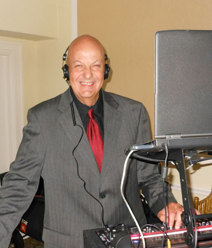

Hi, I’m DJ Stevie Ray. I have been entertaining Boston and New England for over 35 years.
I have worked for and with numerous Boston radio stations such as WBOS 92.9, Eagle 93.7, STAR 93.7, MIX 98.5, WZLX 100.7,WBCN 104 and KISS 108.
I have DJ’d and hosted many major events such as the Centennial Celebration on Revere Beach where over 100,000 people came to party, and the New England Sand Sculpting Festival also on Revere Beach where over 250,000 people attended.I also host and DJ the Phantom Gourmet Food Festival where over 10,000 Phantom Fans Eat, Drink & Party!
I specialize in the 70’s and the 80’s, including Rock, Disco, Funk, Motown, as well as the hits from today.I also have the Biggest Selection of Motown and hard to find disco dance classics around.With over 5,000 cd’s, you are guaranteed to hear your favorite songs on a professional, crystal clear, state-of-the-art sound system.I also offer a spectacular light show that you and your guests will be talking about for years to come.
As your all around Event DJ, I can make any of your events truly memorable:
Weddings • Birthdays • Holiday Parties • Anniversaries • Bar and Bat Mitzvahs • Special Events
Christenings • Showers • Graduations • Class Reunions • Retirements • Corporate Events